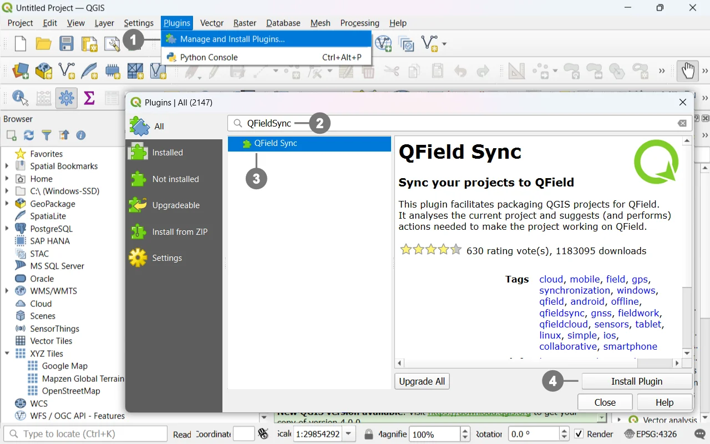
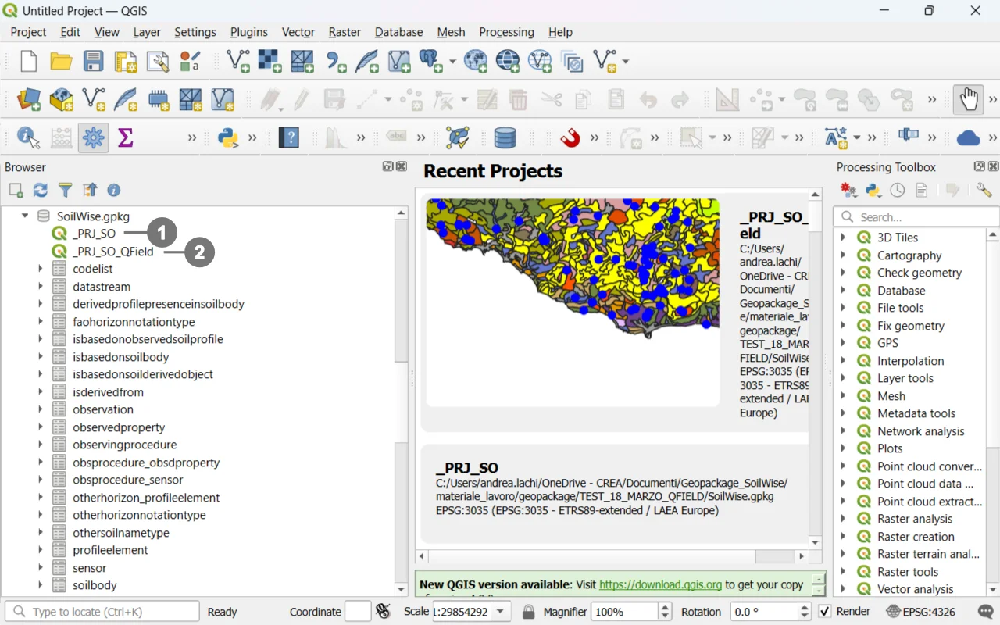
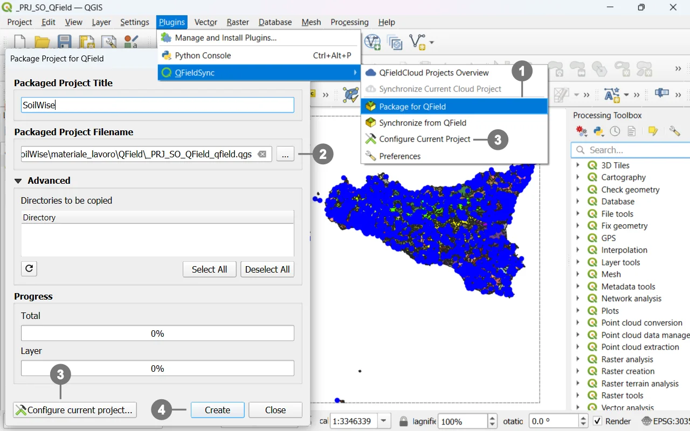
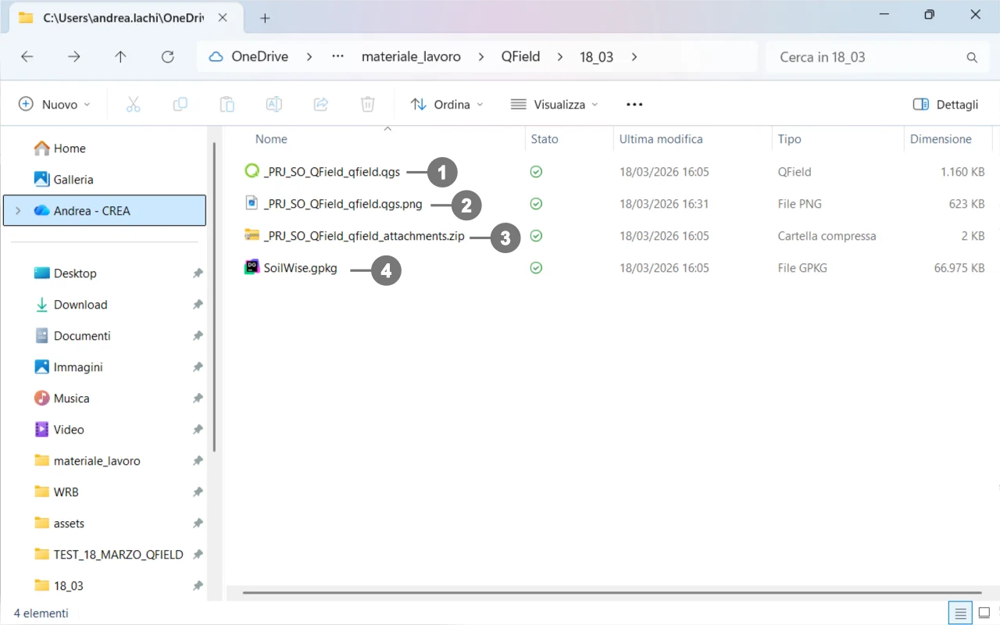
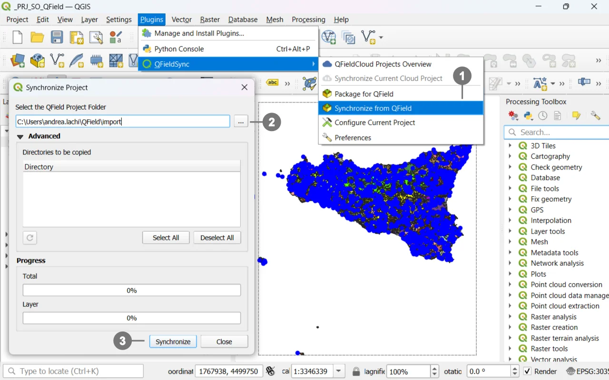

This short guide briefly describes:
Important
This is an introductory guide; for more details on using QField and its plugin, please refer to the official QFieldSync for Cable Packaging documentation.

① Go to Plugins → Manage and Install Plugins…
In the search field, type “QFieldSync” ② (in some installations it is shown as “QField”).
Select QFieldSync ③ and click Install Plugin.④
(Optional) Verify it is enabled: Installed tab → check QFieldSync.
Tip
Before exporting, always save the QGIS project and ensure paths are relative (Project → Properties → Paths) to avoid broken links on the device.
The provided GeoPackage contains two different QGIS projects that point to the same data source (the same layers/tables in the same .gpkg):

② Project `_PRJ_SO_QField` for QField – Optimized for mobile devices with custom forms, pre‑filled fields, simplified widgets, and constraints for field data capture.
_PRJ_SO for QGIS – Optimized for desktop use (full symbology, views, and tools for office work)._PRJ_SO_QField for QField – Optimized for mobile devices with custom forms, pre‑filled fields, simplified widgets, and constraints for field data capture.Both projects use the same GeoPackage as their data source; this ensures consistency and alignment between office work and field work.
Note
_PRJ_SO in QGIS when working on desktop._PRJ_SO_QField in QField (or use it as the source for export via QFieldSync).

Select the destination folder. ②
③ Configure layers for offline use Project Configuration
④ Start the export: the plugin will copy data, styles, and resources, converting paths to relative ones.
Tip
For each layer, you can set the mode in Project Configuration:
Note
Unless there are specific needs, it is discouraged to change the project configuration. The full export of the GeoPackage can be performed without altering the configuration.

├─ project.qgs ① QGIS/QField project file.
├─ image.png ② Image used by the project (see notes below).
├─ package.zip ③ Archive for distribution/transfer/Project_QField/
└─ database.gpkg ④ Data store (GeoPackage).
.qgs → The project file (map, layers, styles, forms). This is the file you open in QGIS and QField.
Best practice: In QGIS, set Project → Properties → Paths → ‘Store relative paths’ to avoid broken links on the device.
.gpkg → The GeoPackage that contains your layers/tables and, if configured, attachments. QField reads and (optionally) edits this file offline.
.png → An image referenced by the project. It may be used as one of the following:
Warning
Write errors: make sure layers are not read‑only and that the device allows writing to the project folder.
Heavy rasters: consider resampling or using lighter tiles for better performance on mobile.

Select the folder containing ② the QField project that you have copied back to your computer after the editing session, or directly access the project folder on the device if it is still connected.
③ Sinchronize